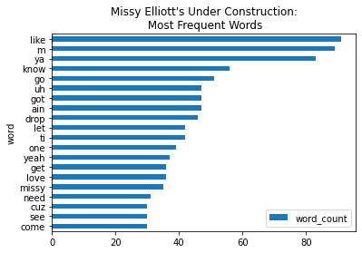

from pathlib import Path35 Song Lyrics Analysis
Since we now have access to all these great song lyrics, let’s run some basic analyses on them.
35.1 Loop Through All Text Files in Directory
directory_path = 'Missy-Elliott_Under-Construction/'for file in Path(directory_path).glob('*.txt'):
print(file)Missy-Elliott_Under-Construction/Intro-Go-To-The-Floor.txt
Missy-Elliott_Under-Construction/Bring-the-Pain.txt
Missy-Elliott_Under-Construction/Gossip-Folks.txt
Missy-Elliott_Under-Construction/Work-It.txt
Missy-Elliott_Under-Construction/Back-in-the-Day.txt
Missy-Elliott_Under-Construction/Funky-Fresh-Dressed.txt
Missy-Elliott_Under-Construction/Pussycat.txt
Missy-Elliott_Under-Construction/Nothing-Out-There-for-Me.txt
Missy-Elliott_Under-Construction/Slide.txt
Missy-Elliott_Under-Construction/Play-That-Beat.txt
Missy-Elliott_Under-Construction/Ain't-That-Funny.txt
Missy-Elliott_Under-Construction/Hot.txt
Missy-Elliott_Under-Construction/Can-You-Hear-Me.txt
Missy-Elliott_Under-Construction/Work-It-(Remix).txt
Missy-Elliott_Under-Construction/Drop-the-Bomb.txt35.2 Count Words in Each File in Directory
stopwords = ['i', 'me', 'my', 'myself', 'we', 'our', 'ours', 'ourselves', 'you', 'your', 'yours',
'yourself', 'yourselves', 'he', 'him', 'his', 'himself', 'she', 'her', 'hers',
'herself', 'it', 'its', 'itself', 'they', 'them', 'their', 'theirs', 'themselves',
'what', 'which', 'who', 'whom', 'this', 'that', 'these', 'those', 'am', 'is', 'are',
'was', 'were', 'be', 'been', 'being', 'have', 'has', 'had', 'having', 'do', 'does',
'did', 'doing', 'a', 'an', 'the', 'and', 'but', 'if', 'or', 'because', 'as', 'until',
'while', 'of', 'at', 'by', 'for', 'with', 'about', 'against', 'between', 'into',
'through', 'during', 'before', 'after', 'above', 'below', 'to', 'from', 'up', 'down',
'in', 'out', 'on', 'off', 'over', 'under', 'again', 'further', 'then', 'once', 'here',
'there', 'when', 'where', 'why', 'how', 'all', 'any', 'both', 'each', 'few', 'more',
'most', 'other', 'some', 'such', 'no', 'nor', 'not', 'only', 'own', 'same', 'so',
'than', 'too', 'very', 's', 't', 'can', 'will', 'just', 'don', 'should', 'now', 've', 'll', 'amp']from collections import Counter
import redef split_into_words(any_chunk_of_text):
lowercase_text = any_chunk_of_text.lower()
split_words = re.split("\W+", lowercase_text)
return split_words def get_most_frequent_words_directory(directory_path):
number_of_desired_words = 20
meaningful_words_tally = Counter()
for filepath in Path(directory_path).glob('*.txt'):
full_text = open(filepath, encoding="utf-8").read()
all_the_words = split_into_words(full_text)
meaningful_words = [word for word in all_the_words if word not in stopwords]
meaningful_words_tally.update(meaningful_words)
most_frequent_meaningful_words = meaningful_words_tally.most_common(number_of_desired_words)
return most_frequent_meaningful_wordsget_most_frequent_words_directory("Missy-Elliott_Under-Construction")[('like', 91),
('m', 89),
('ya', 83),
('know', 56),
('go', 51),
('uh', 47),
('got', 47),
('ain', 47),
('drop', 46),
('let', 42),
('ti', 42),
('one', 39),
('yeah', 37),
('get', 36),
('love', 36),
('missy', 35),
('need', 31),
('see', 30),
('cuz', 30),
('come', 30)]35.3 Word Count Data Viz with Pandas
import pandas as pdfrequencies = get_most_frequent_words_directory("Missy-Elliott_Under-Construction")
#Make Counter dictionary into a Pandas DataFrame
word_frequency_df = pd.DataFrame(frequencies, columns=['word', 'word_count'])
#Plot word counts
word_frequency_df.sort_values(by='word_count').plot(x='word', kind='barh', title="Missy Elliott's Under Construction:\n Most Frequent Words")<matplotlib.axes._subplots.AxesSubplot at 0x11a526c10>
35.4 Keywords in Context
from IPython.display import Markdown, display
from pathlib import Pathkeyword = "ti"
for filepath in Path(directory_path).glob('*.txt'):
text = open(filepath).read()
for line in text.split("\n"):
#Search for keyword
if re.search(f"\\b{keyword}\\b", line):
#Replace keyword with bolded keyword
line_with_bolding = re.sub(f"\\b{keyword}\\b", f"**{keyword}**", line, flags=re.IGNORECASE)
#Display line with bolded keyword
display(Markdown(line_with_bolding))ti esrever dna ti pilf, nwod gniht ym tup
ti esrever dna ti pilf, nwod gniht ym tup
ti esrever dna ti pilf, nwod gniht ym tup
ti esrever dna ti pilf, nwod gniht ym tup
ti esrever dna ti pilf, nwod gniht ym tup
ti esrever dna ti pilf, nwod gniht ym tup
ti esrever dna ti pilf, nwod gniht ym tup
ti esrever dna ti pilf, nwod gniht ym tup
sdrawkcab ti ekat ot ekil yssiM yaw eht hctaW
ti esrever dna ti pilf, nwod gniht ym tup
ti esrever dna ti pilf, nwod gniht ym tup
ti esrever dna ti pilf, nwod gniht ym tup
ti esrever dna ti pilf, nwod gniht ym tup
ti esrever dna ti pilf, nwod gniht ym tup
ti esrever dna ti pilf, nwod gniht ym tup
ti esrever dna ti pilf, nwod gniht ym tup
ti esrever dna ti pilf, nwod gniht ym tup
(ti esrever)
ti esrever dna ti pilf, nwod gniht ym tup
ti esrever dna ti pilf, nwod gniht ym tup
ti esrever dna ti pilf, nwod gniht ym tup
ti esrever dna ti pilf, nwod gniht ym tup
keyword = "Missy"
for filepath in Path(directory_path).glob('*.txt'):
text = open(filepath).read()
for line in text.split("\n"):
#Search for keyword
if re.search(f"\\b{keyword}\\b", line):
#Replace keyword with bolded keyword
line_with_bolding = re.sub(f"\\b{keyword}\\b", f"**{keyword}**", line, flags=re.IGNORECASE)
#Display line with bolded keyword
display(Markdown(line_with_bolding))Yeah, what’s the deal ya’ll this Missy Elliott
This is a Missy Elliott Exclusive (Set it off)
(New Missy Elliott y’all!)
Uhh, this is - uhh, a Missy Elliott - uhh, exclusive
We got Missy Elliott coming through
Girl that is Missy Elliott she lost a lot of weight
Yo, straight up Missy killed that shit tonight for real
Hi Missy?
This is a Missy Elliott one-time exclusive, come on
Yeah, it’s Missy Elliott!
Whassup, Missy? Timbo!
This is.. another.. Missy Elliott (Hip-Hop! Yes!)
Me and Missy be the new Tag Team
Make a nigga wanna holla like Missy, but fuck it
Me and Missy ballin’ up the avenue
Uh, this is another Missy Elliott exclusive, uh, come on
A Missy Elliot exclusive
This is another Missy Elliott exclusive
So poor, Missy on the rise like the sun
And Missy be the beats behind the beats
(This is a Missy Elliott exclusive)
(Intro: Missy)
This is another Missy Elliot exclusive
(Missy)
This is an old school Missy exclusive
Trying to see who Missy gon’ slain
Missy it’s Diane
Okay Missy, take of yourself
This is a Missy Elliot one time exclusive (Come on)
Now Missy she too much for me (I’m freaky)
Her broke ass wanna fight, Missy know how to treat me (Yeah)
I had visions of Missy with her money by the tub
I’m looking for Missy now so I can get my back rubbed
“Watch the way Missy like to take it backwards”
This is a Missy Elliott (uh) heavy hitter
If there is anything wrong, please open an issue on GitHub or email f.pianzola@rug.nl